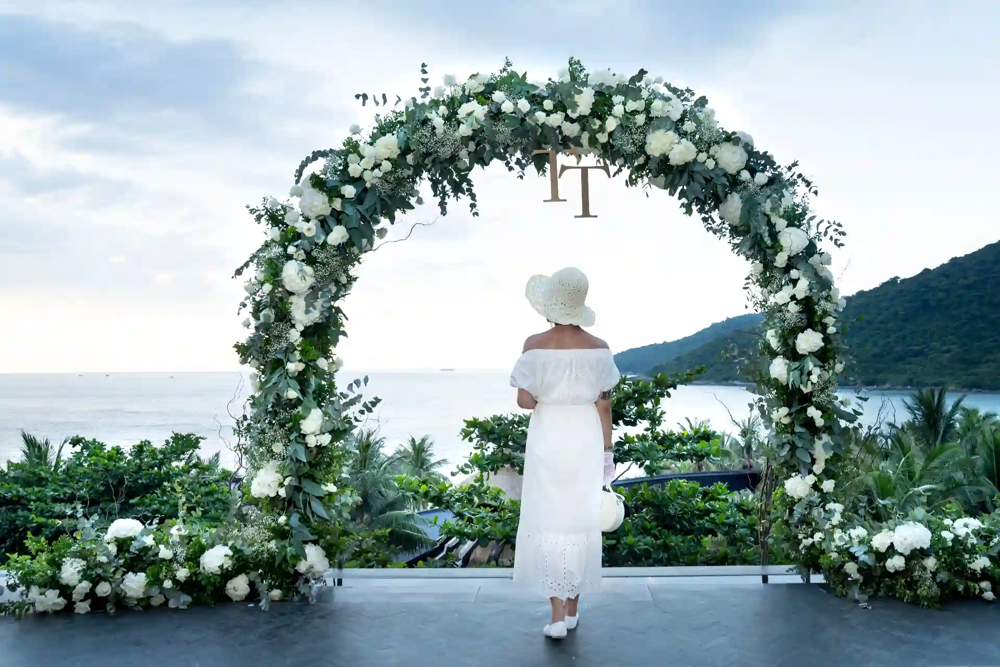
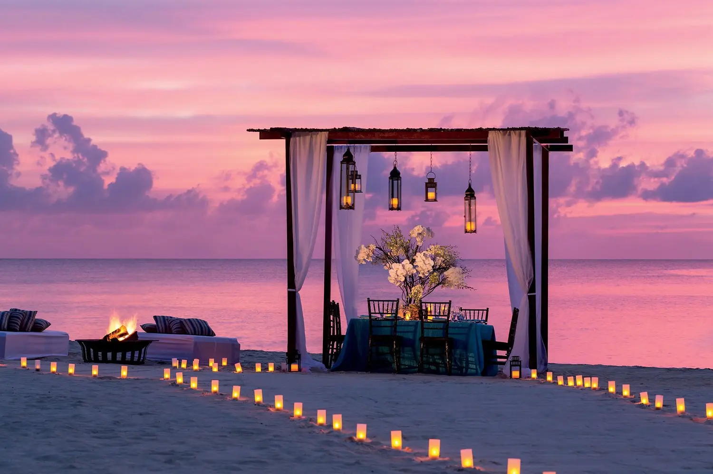
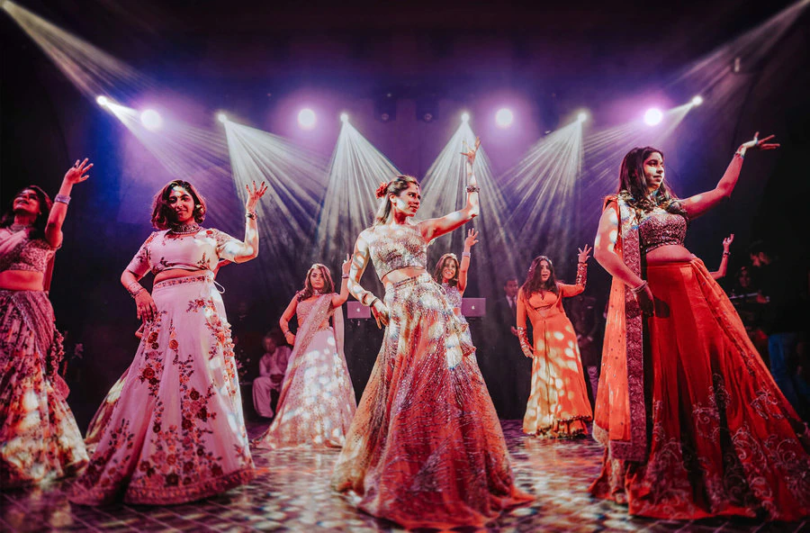
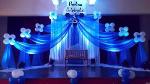

Destination Wedding

No. 1 Destination Wedding planner In Kerala
We offer comprehensive professional services to make your dream wedding a reality. From selecting the perfect venue to coordinating all the little details, our services are designed to help you plan and execute your wedding with ease and efficiency so that you can focus on enjoying your special day.
One of the most significant advantages of our destination wedding services is the personalised attention you receive from experienced professionals with extensive knowledge of the destination. You get insider tips and assistance with all the legal and documentation requirements necessary for getting married in God’s Own country.
In addition to logistical support, we also offer creative ideas and inspiration to help you design a wedding that is uniquely yours. Whether you want a minimalist ceremony or a luxurious wedding resort celebration, we can help you bring your vision to life.
Beach Wedding

Sun-kissed vows on Kerala's sandy shores of India
Don’t miss this beach heaven…
Celebrate your love amidst the serene shores and palm-fringed beaches of Kerala, India. With the gentle lullaby of the ocean, let your wedding be an enchanting affair that you and your guests will cherish forever.
Kerala, in India, is a stunning destination for beach wedding ceremonies, with its serene beaches and picturesque backwaters providing the perfect backdrop for a memorable celebration. Let’s dive a little deeper into the
beach wedding planning services available in this beautiful state of India.
Private Parties
Exclusive soirées amidst Kerala's breathtaking backdrops
Adornment Event Management in Kerala holds Private Parties and crafts unforgettable moments that leave lasting memories. From intimate gatherings to lavish affairs, we curate every
detail with impeccable precision, blending local charm and global sophistication. Step into
a world of bespoke celebrations where dreams come to life.
Corporate Event Management

The Leading Corporate Event Management Group in Kochi, Kerala
Business meetings and corporate events are the best and most novel ways to stimulate the team and get them thinking creatively and outside the box. If your team members are new, then it enables them to interact with other existing employees, which can even result in a new fantastic business idea.
With Melodia, corporate event management companies in Kochi, Kerala goes beyond just planning a meeting. Besides arranging meetings and conferences, we also plan and execute corporate hospitality, conventions, exhibitions, client entertainment, incentive travel reward programmes, motivational events, team-building activities, and more.
Music & Entertainment

Rhythmic beats and vibrant melodies
When it comes to event management, music and entertainment in Kerala are like the cherry on top of a perfectly baked cake. They provide the extra bit of flavour that makes the event truly memorable and enjoyable for all guests.
Live music bands or solo musicians are a great way to add an element of live performance to the event. Imagine a jazz band serenading guests as they sip on cocktails or a rock band pumping up the crowd with their energy and stage presence. Live music can set the tone and create an atmosphere that guests will never forget.
DJ services are another popular music and entertainment in Kerala, it is the best option for events. DJs can play a mix of songs that cater to the guests’ preferences and get everyone dancing. They can give the celebration a twist when they add their own remixes making it distinctive.
Birthday Party

Creating Magical Moments: Top Birthday Event Management in Kerala by the Best Organizers
Birthday event management in Kerala for children and for adults both require adequate planning. If you plan it yourself you are tired doing the decorations, busy cooking the food or busy serving the food and this could eventually lead to a lot of confusion not forgetting the tedious job of cleaning up after the party is over. Instead of going through the tiresome process of DIYs which may or may not be successful, it is best to hire a birthday even planner who can help you achieve your goals with little or no difficulties. Melodia Events is an event management company in Kerala having special expertise in handling birthday organising which can be for either adults or children.